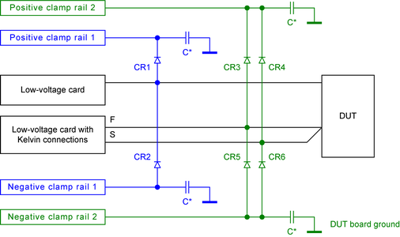

HV protection - Clamp diodes
The clamp diodes discharge high-voltage pulses to the clamp rails and provide the required isolation for low voltages. For each protected line, one diode is required for the positive clamp rail and one for the negative clamp rail.
Circuit
The following diagram shows an example of how to connect the diodes to a single signal line and a Kelvin connection if four different clamp voltages are required. The parts of the high voltage protection are marked green and blue. We recommend connecting the diodes to test head cards with Kelvin connections both on the force line and on the sense line.

Hints for the layout
High-current pulses together with the resistance and inductivity of the connections to the clamp regulators will always increase the voltage on the protected lines. Some design rules must be considered to minimize the effect of these parasitic characteristics:
- We recommend to connect small capacitors (C*) from the diodes to the DUT board ground plane. The connections from the capacitors to the diodes and to the DUT board ground plane must be as short as possible.
- Separate capacitors (C*) are required for each diode or for each group of diodes in close proximity that are connected to the same clamp rail. More than one capacitor per clamp rail may be required to meet this recommendation.
- The diodes must be placed near the pogo pins of the low-voltage cards to protect the pins against cross-talk from pulses on other lines.
- The conductive tracks and vias between the diodes and clamp regulators will additionally cause an increase of the voltage. We recommend using a low resistive and low inductive design for these connections.
Selection of the diodes
The clamp diodes must meet the following requirements:
- The diodes must be able to carry the maximum expected pulse current of a high-current pulse.
- The forward voltage must be as low as possible to maximize the headroom between the operating range and the compliance range of the protected card channels.
- The small-signal resistance of the diodes must be as low as possible to minimize the maximum voltage for high-current pulses.
Bill of materials
Reference designator |
Description |
Comment |
|---|---|---|
CR1, CR2 |
CMLD6001, two diodes |
This type is recommended for digital signal lines. Package with two diodes, recommended for single digital signal lines. |
CR3 ... 6 |
DSL70, array of four diodes |
This type is recommended for channels with Kelvin connections. One diode array is required per two protected lines on the same clamp rails. |
C* |
100 nF ceramic capacitor |
Separate capacitors are required for each diode or for each group of diodes in close proximity that are connected to the same clamp rail. |
Functional changes
- Introduced in SmarTest 7.3.1
- SmarTest 7.4.3: Protection circuitry optimized. New recommended type of diode added.